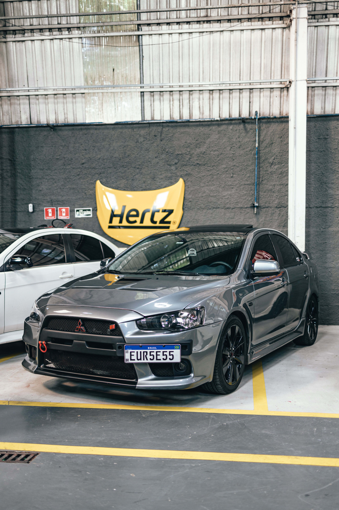
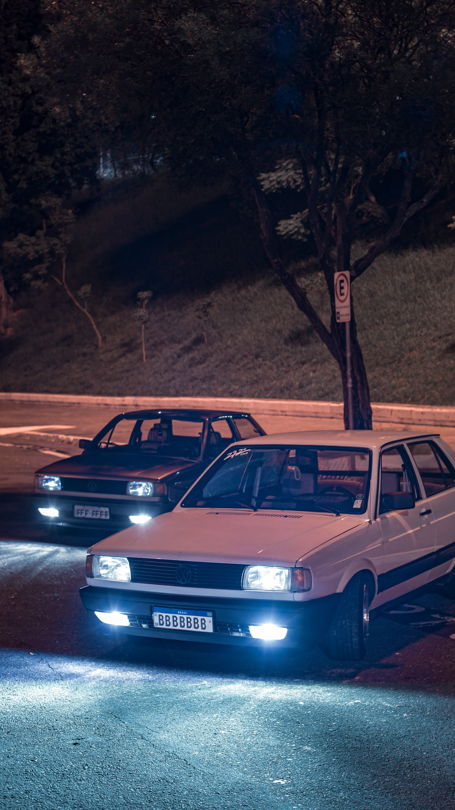
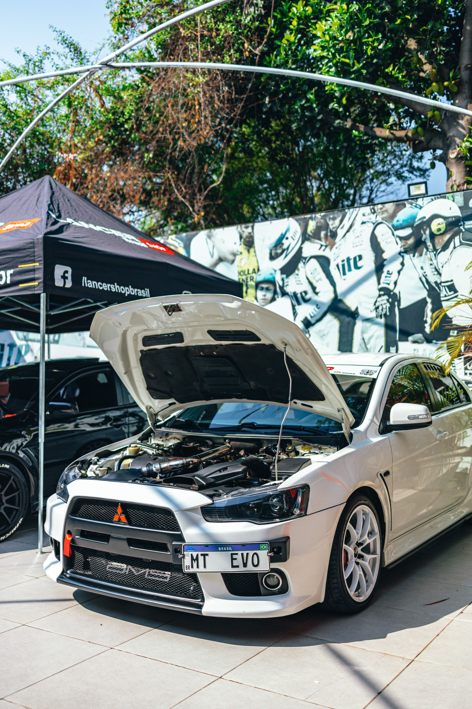
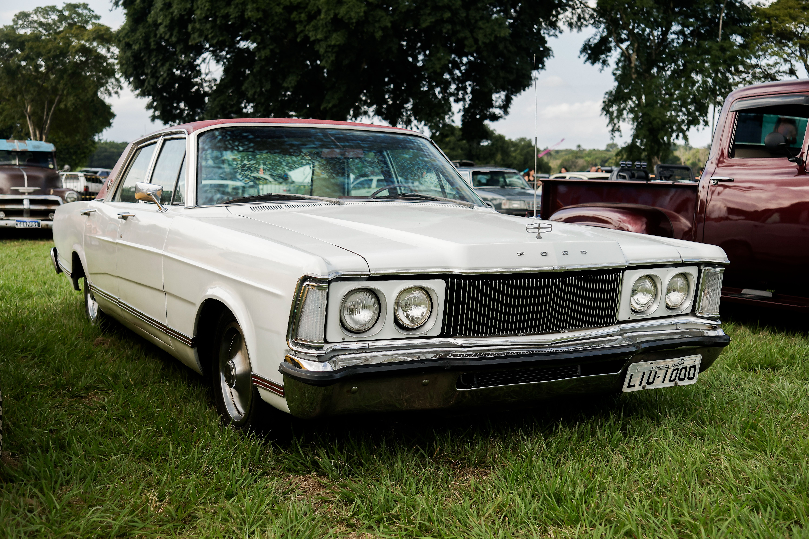
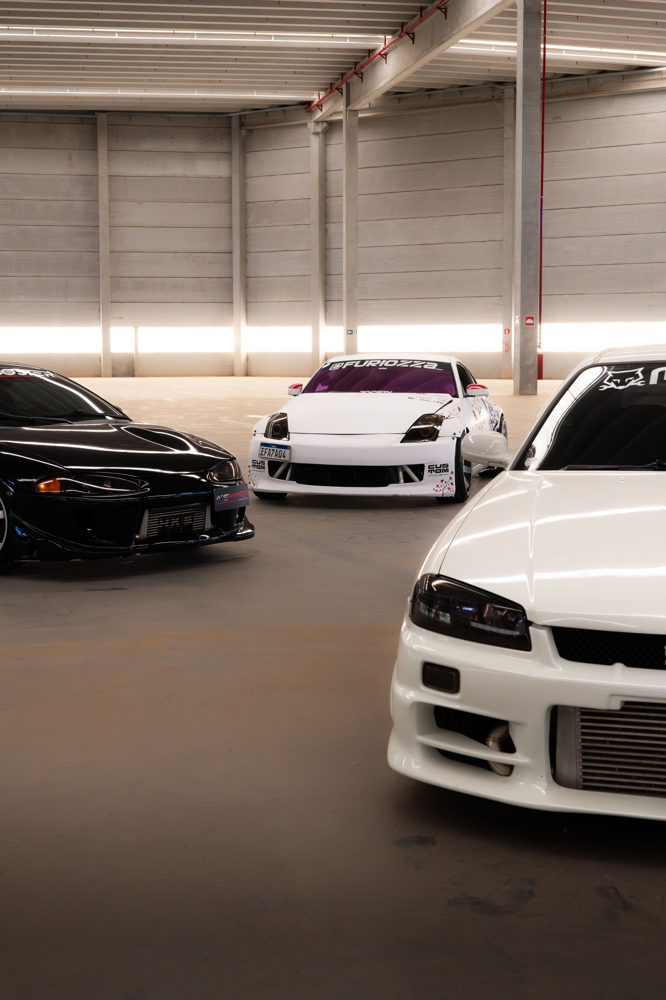

Os novos recordes de 0 a 100 km/h
A engenharia extrema dos novos motores elétricos e híbridos que estão desafiando as leis da física nas pistas.
Alta performance, superesportivos e a cultura das pistas

A engenharia extrema dos novos motores elétricos e híbridos que estão desafiando as leis da física nas pistas.

Modificações essenciais em suspensão, freios e pneus para garantir o melhor tempo de volta com segurança máxima.

Uma viagem no tempo pelos ícones que definiram a cultura automotiva underground e continuam valorizando.

Entenda como o downsizing e o gerenciamento eletrônico moderno entregam potências absurdas em motores menores.

Análise dos últimos modelos aspirados que mantêm viva a sinfonia mecânica clássica antes da eletrificação total.